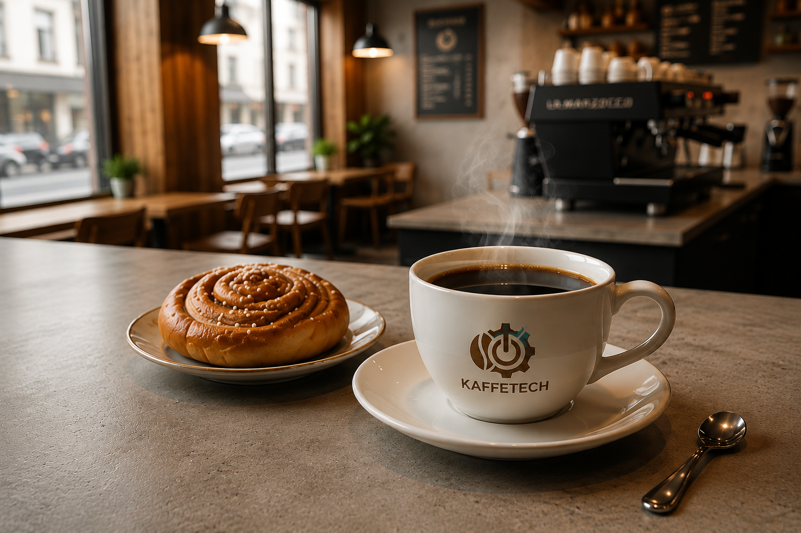
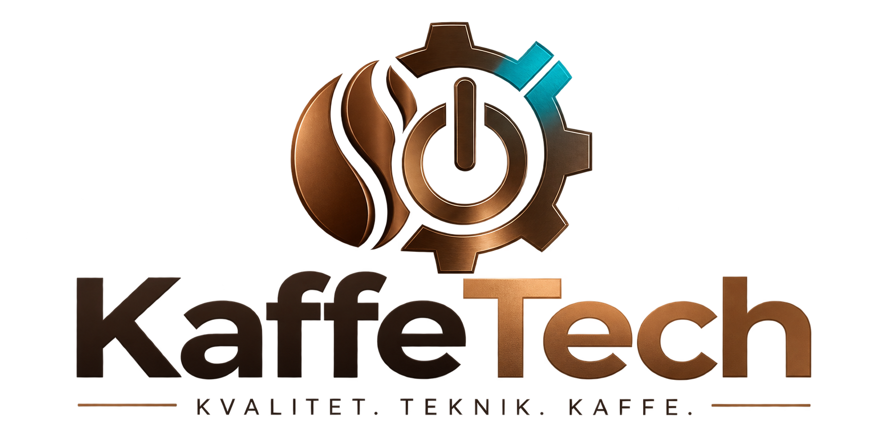
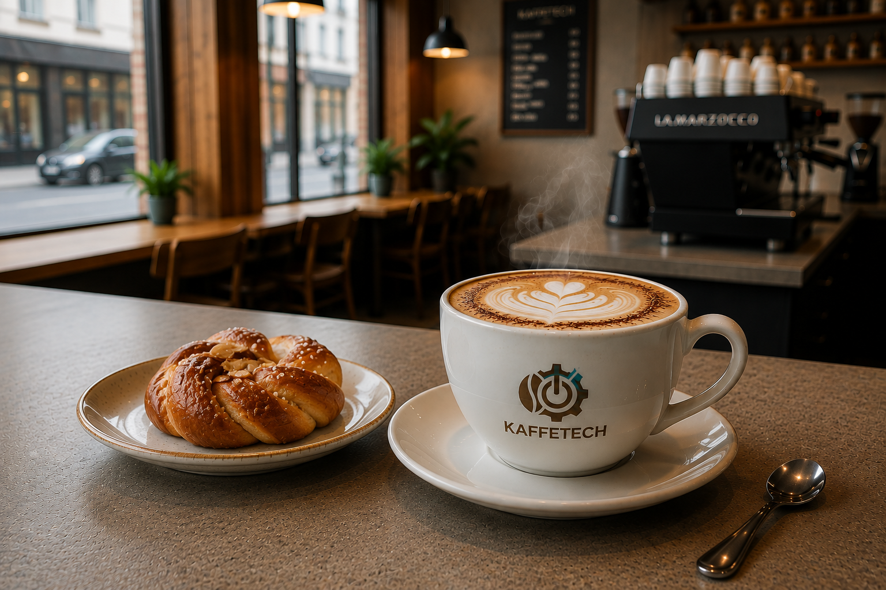
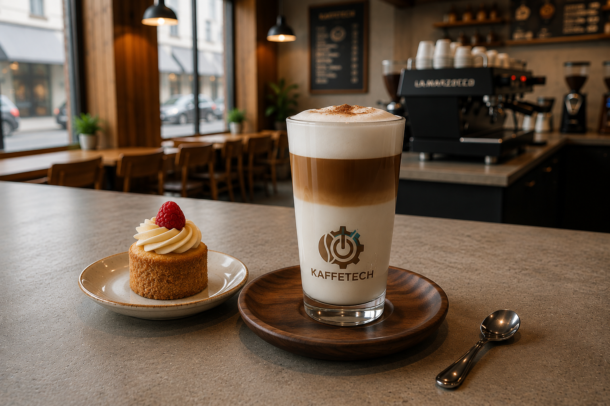
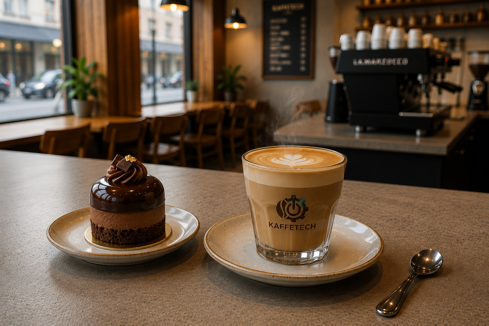
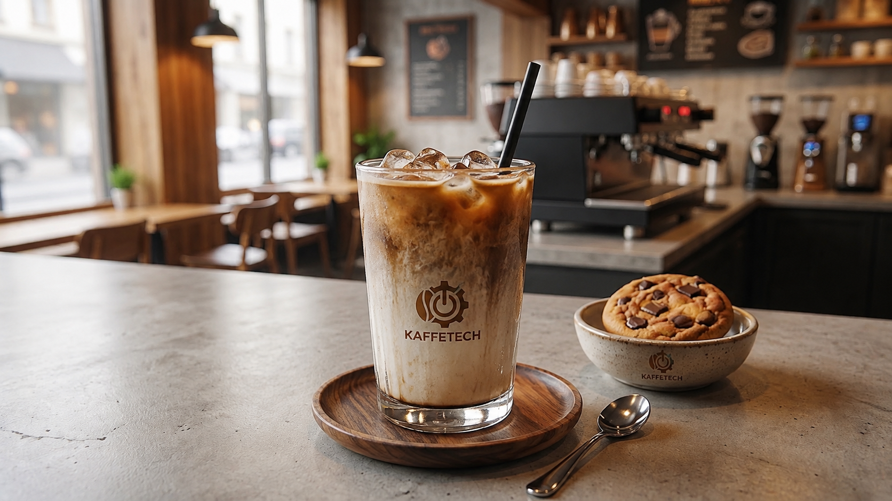

Kaffe
Kaffe serveras vanligtvis varmt i en kopp och bryggs genom att varmt vatten passerar genom malet kaffe. Det har en fyllig och aromatisk smak som kan variera beroende på kaffebönor och rostning.
35 kr Populär
Bakverket kan skilja sig från bilden och även variera från dag till dag.

Kaffe serveras vanligtvis varmt i en kopp och bryggs genom att varmt vatten passerar genom malet kaffe. Det har en fyllig och aromatisk smak som kan variera beroende på kaffebönor och rostning.
35 kr Populär
Cappuccino består av espresso, varm mjölk och ett lager mjölkskum och serveras vanligtvis i en mindre kopp. Drycken har en krämig och balanserad smak med tydlig karaktär av espresso.
38 kr
Mild och krämig mjölkdryck med tre tydliga lager av varm mjölk, espresso och mjölkskum. Serveras i ett högt glas och har en mildare och sötare smak än en vanlig caffè latte.
43 kr
Cortado serveras vanligtvis i ett mindre glas eller en liten kopp och består av espresso och varm, lätt skummad mjölk. Den intensiva kaffesmaken rundas av av mjölken, vilket ger en balanserad dryck.
40 kr Nyhet
Iskaffe serveras kallt med is och består av kaffe och kall mjölk. Den har en mild, krämig och svalkande smak med en tydlig ton av kaffe.
29 kr Rea